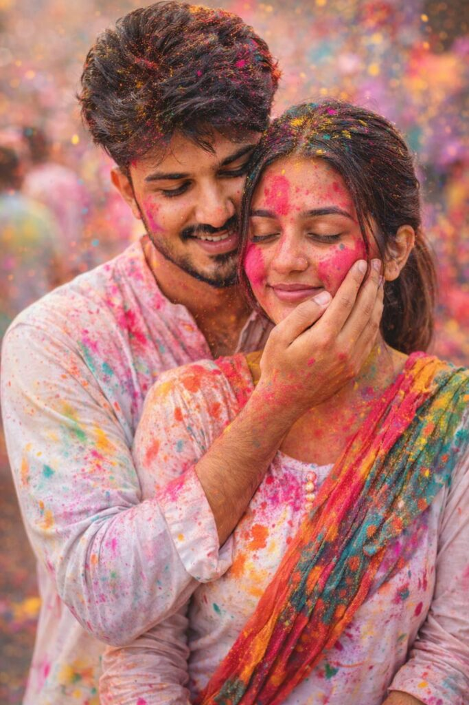
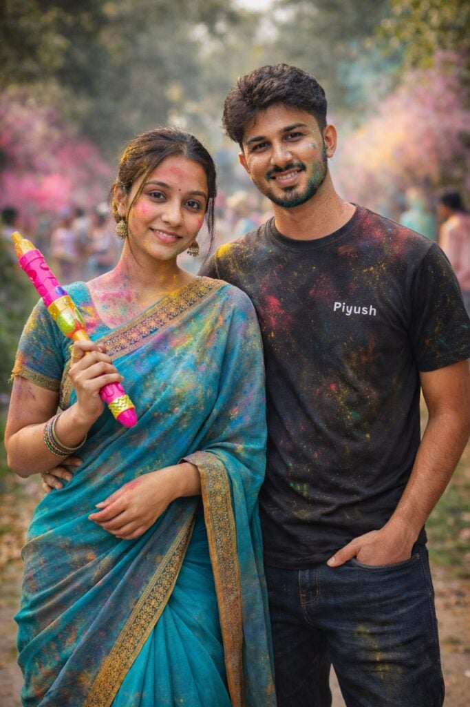
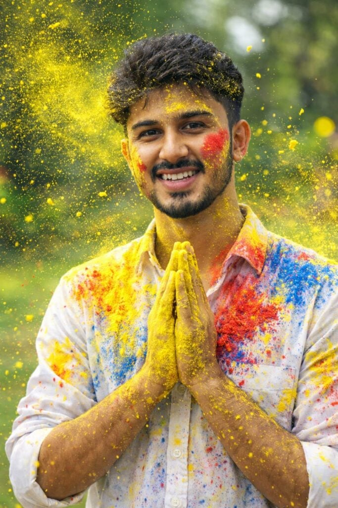
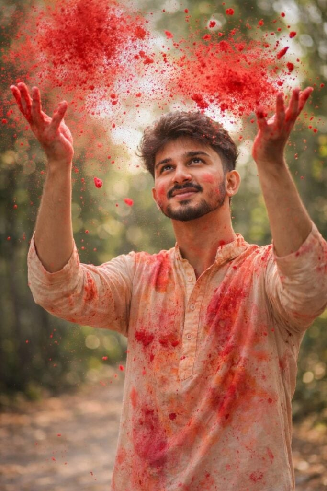
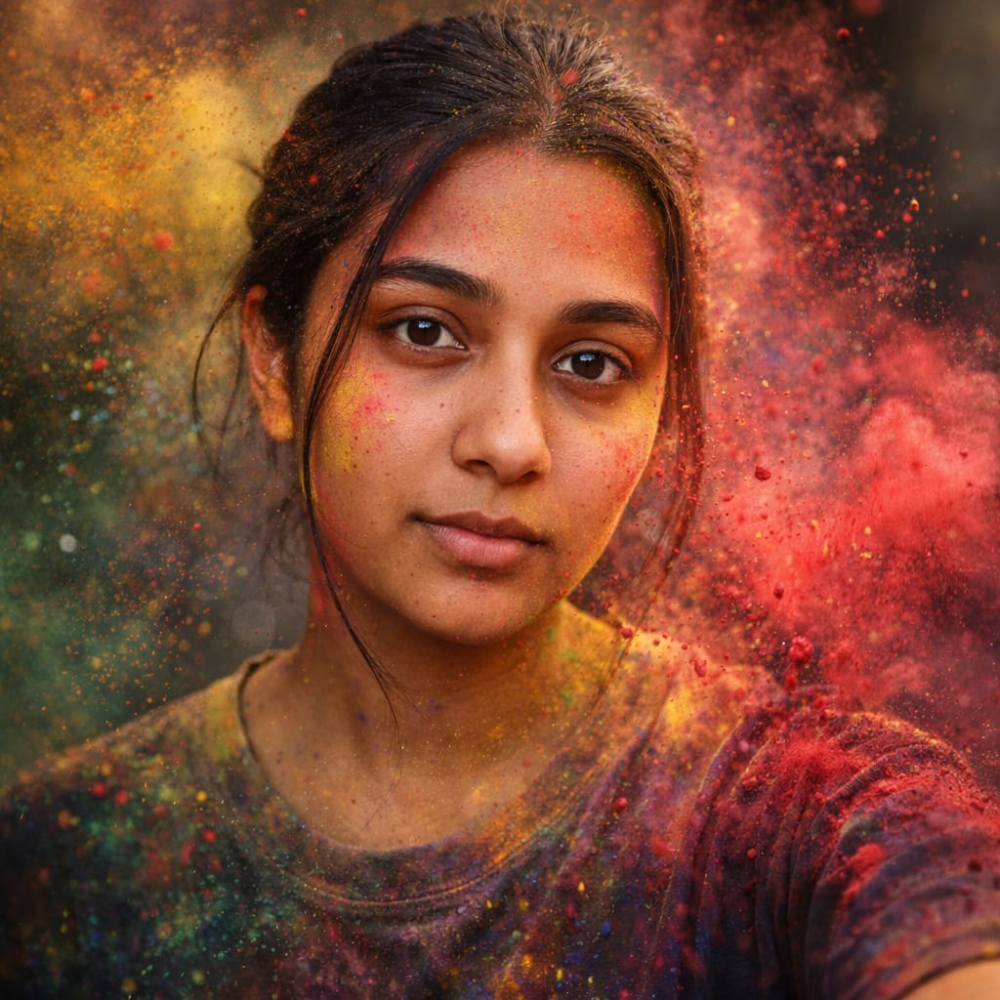
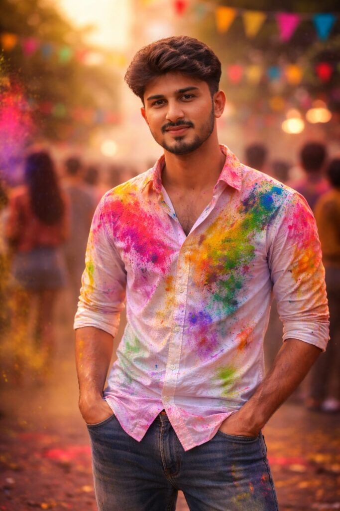
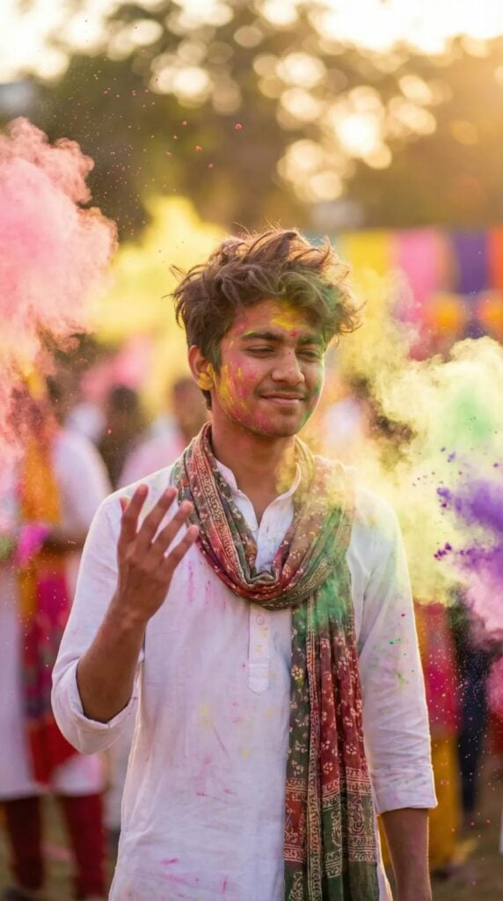

Holi AI prompts for ChatGPT and Gemini are trending as people use artificial intelligence to celebrate the festival of colors in creative ways. From social media posts to festive visuals, Holi-themed AI content helps users create colorful and engaging ideas instantly.
Using the right Holi prompts for ChatGPT and Gemini makes festival content more attractive and shareable.
Want more awesome prompts?
Join our community and get the latest viral prompts daily.
Follow on Instagram
? AI PROMPT
Holi Couples prompt celebrating Holi, the festival of colors. The man is embracing the woman from behind, with his hand gently touching her face, which is smeared with pink and red Holi powder.Both are dressed in white outfits that are also stained with colorful powders. The woman has a colorful dupatta draped over her shoulder, adding to the festive look. Her eyes are closed, and she has a gentle smile

? AI PROMPT
Use the uploaded male photo and uploaded female photo as the PRIMARY and ONLY face references.Both faces must match 100% exactly — same identity, facial structure, skin tone, eyes, nose, lips, hair, and expressions.Do NOT change faces. Do NOT beautify excessively.NO anime, NO cartoon, NO illustration. Faces must be fully realistic and photographic.Create a realistic Indian Holi couple photoshoot scene.A stylish young Indian couple standing together confidently.Female look:– Wearing a beautiful turquoise / blue saree with golden border– Traditional Indian jewelry (earrings, bindi, light makeup)– Holding a colorful pichkari (water gun) in hand– Natural smile, elegant poseMale look:– Wearing a black t-shirt and dark jeans– Name text like “Piyush” written on the t-shirt (customizable)– One hand in pocket, other resting casually– Confident and stylish postureHoli details:– Natural gulal colors on faces and clothes (pink, blue, yellow, green)– Color smoke in the background– Festive Indian outdoor location (garden / village lane)– People celebrating Holi softly blurred in backgroundPhotography & Quality:– DSLR camera look– Cinematic natural daylight– Ultra-realistic skin texture– Sharp focus on both faces– Soft background blur (bokeh)– High dynamic range– 4K ultra-HD resolutionMood:– Romantic– Festive– Stylish– Joyful Holi celebrationFinal image must look like a REAL professional photoshoot, not AI generated.

? AI PROMPT
Ultra-realistic Holi festival portrait using my uploaded photo as the face reference: joyful young man smiling naturally, hands pressed together in front of chest covered in bright yellow Holi powder., vibrant yellow color powder exploding and flying across the frame, white button-up shirt splashed with multicolor paint stains (yellow, red, blue), red powder streak on one cheek, playful festive expression, dynamic powder particles frozen mid-air, outdoor garden background softly blurred with

? AI PROMPT
A young Indian man celebrating Holi, tossing bright red color powder (red gulal) into the air with both hands. He is wearing a stylish light beige kurta splashed with red color, smiling softly and looking upward. Red gulal particles frozen mid-air around his face, creating a dramatic dynamic splash effect Natural outdoor background with trees and soft blur (bokeh). Bright daylight, cinematic lighting, shallow depth of field. Realistic skin texture, expressive eyes, joyful festive mood.

? AI PROMPT
Use the uploaded photo as the ONLY face reference.Face must match 100% exactly — same identity, facial structure, skin tone, eyes, nose, lips, and expression.Do not beautify, reshape, or stylize the face.No anime, no cartoon, no illustration.Ultra-realistic cinematic Holi portrait of a young woman, captured in a natural candid moment at the exact second of a slow-motion color burst. Fine gulal powder particles float and disperse naturally around her face and hair, with realistic gravity, depth, and subtle motion blur (not frozen or artificial). Sharp, natural focus on her eyes and facial features, with gentle fall-off toward the edges. Shot on a professional DSLR camera using an 85mm lens at wide aperture, creating shallow depth of field and creamy cinematic bokeh. Soft yet dramatic cinematic lighting highlights feminine facial contours with realistic shadows. Authentic skin texture with visible pores, fine baby hair, natural imperfections, and true skin tones. Realistic color grading, balanced contrast, no artificial glow, no beauty filter, no plastic skin, no over-sharpening, photorealistic 4K ultra-HD clarity

? AI PROMPT
Ultra-realistic cinematic DSLR portrait of a young male (exact face match from reference). Subject standing confidently, both hands casually in pockets.
Relaxed royal posture, calm dominant expression.
White shirt richly splashed with Holi colors, elegant yet powerful look.
Soft crowd blur behind, colorful flags and powder in air.
Golden hour lighting with cinematic color grading.
DSLR, 85mm lens, f/1.8, shallow DOF, ultra-realistic, full HD professional photography

? AI PROMPT
ultra-realistic Holi portrait of a young girl/boy in his 17s. Dressed in a white kurta and a lona scarf, he's surrounded by a shower of colorful qulal powder. With a soft smile and eyes slightly closed, he raises his hand as bright colors explode around him. The outdoor setting features dreamy bokeh and Warm golden lighting, capturing the vibrant festival vibe perfectly. Feeling the festive spirit.